Purpose
MessHub replaces manual mess administration with a centralized digital system that improves speed, transparency, and day-to-day operations.
Internship Project • Full-Stack Web Application
A practical mess management platform designed to streamline student records, attendance, menu planning, payments, and leave requests for a hostel or mess system.
MessHub replaces manual mess administration with a centralized digital system that improves speed, transparency, and day-to-day operations.
It helps admins manage records efficiently while giving students a convenient view of attendance, payment status, feedback, and menu updates.
React.js, ASP.NET Web API, SQL Server, Razorpay integration, and responsive UI design.
This solution was built to simplify mess operations and improve communication between admins, staff, and students. It combines real-time management tools with a clean interface for easier daily use.
Below is a structured view of the main interfaces and workflows that make MessHub a complete mess-management solution.
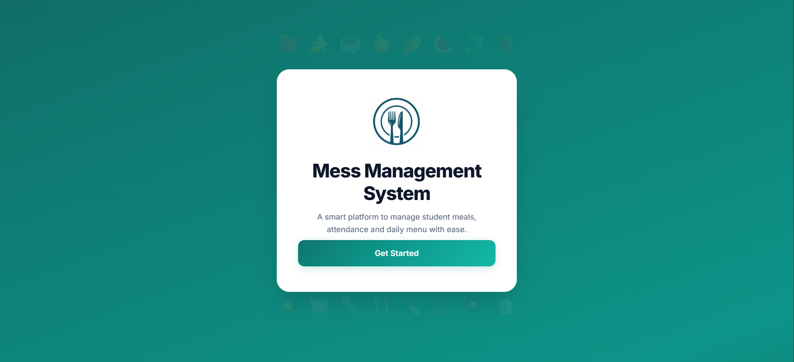
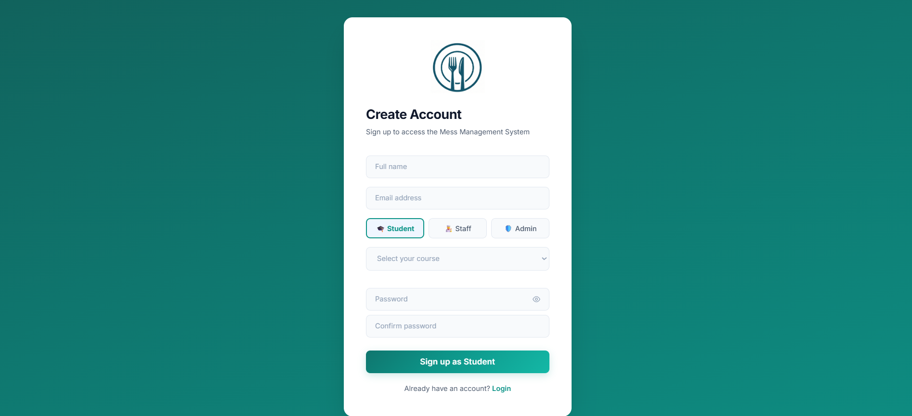
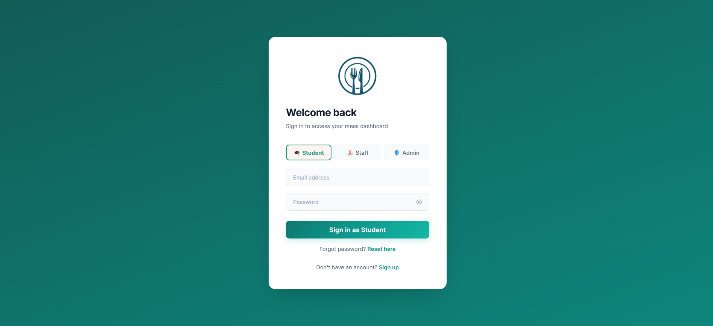
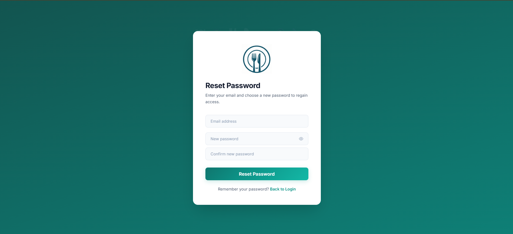

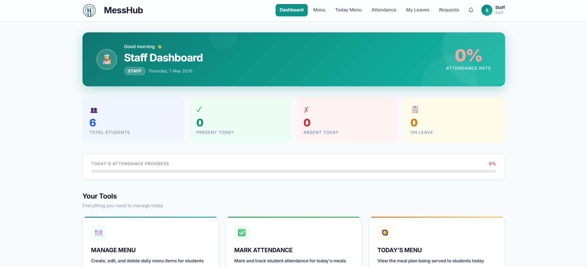
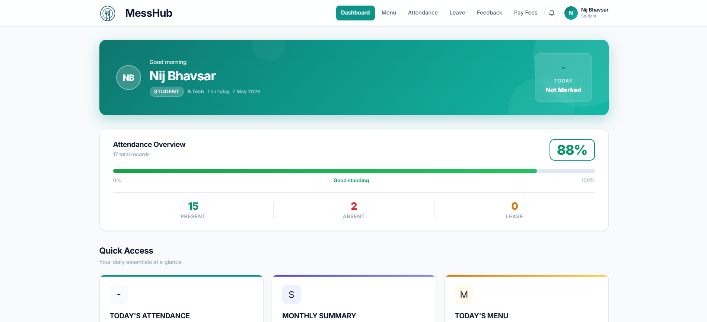

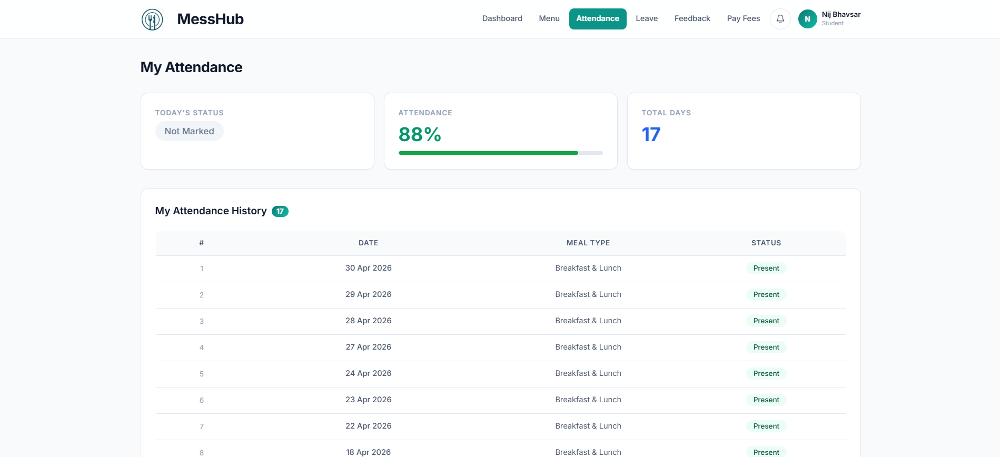

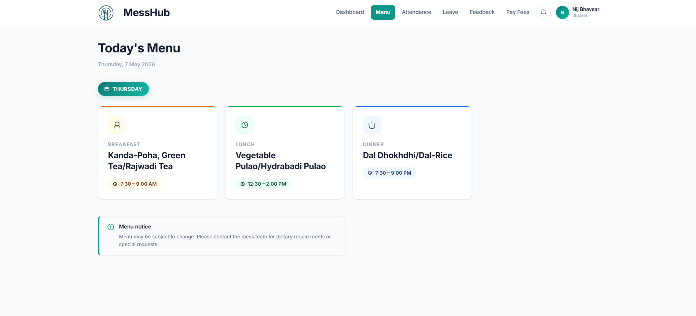
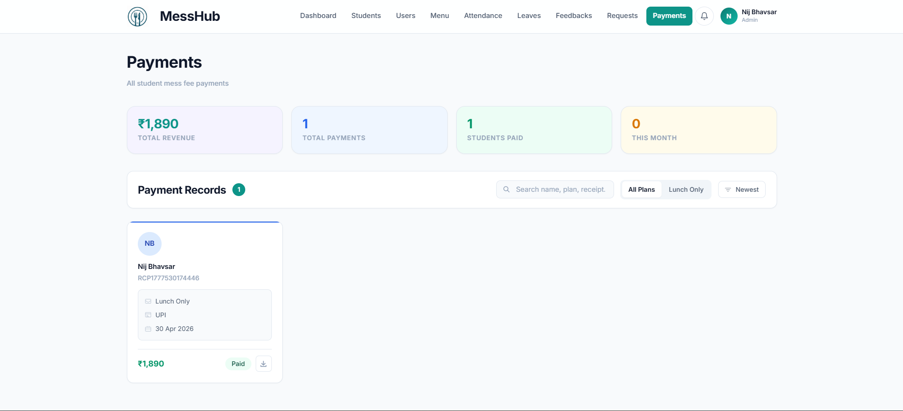
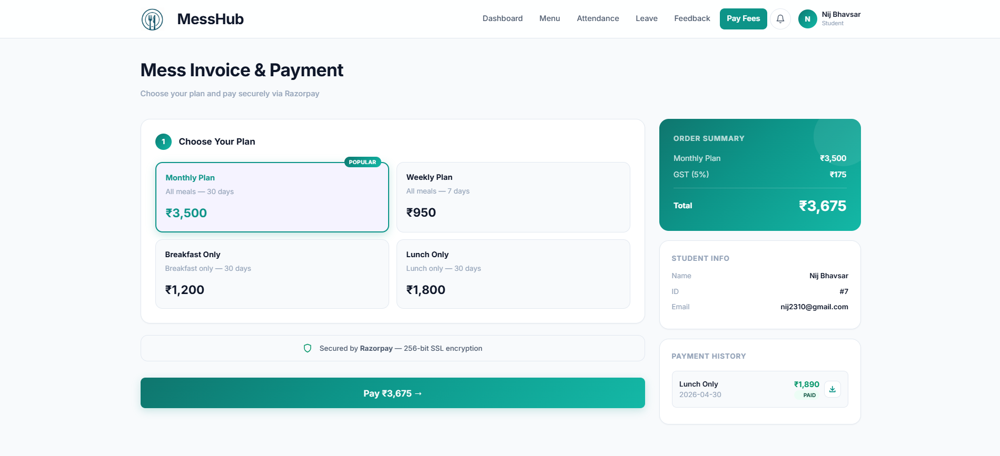
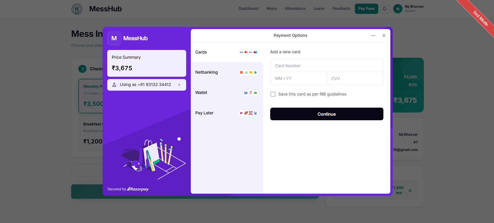
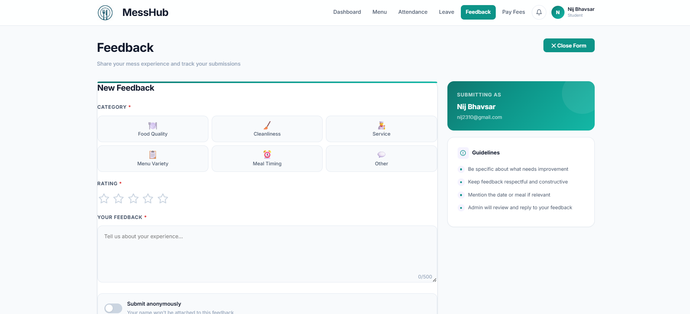
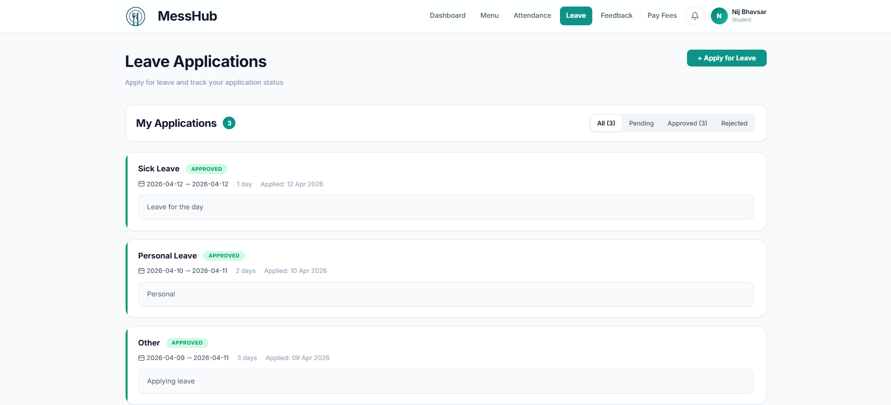
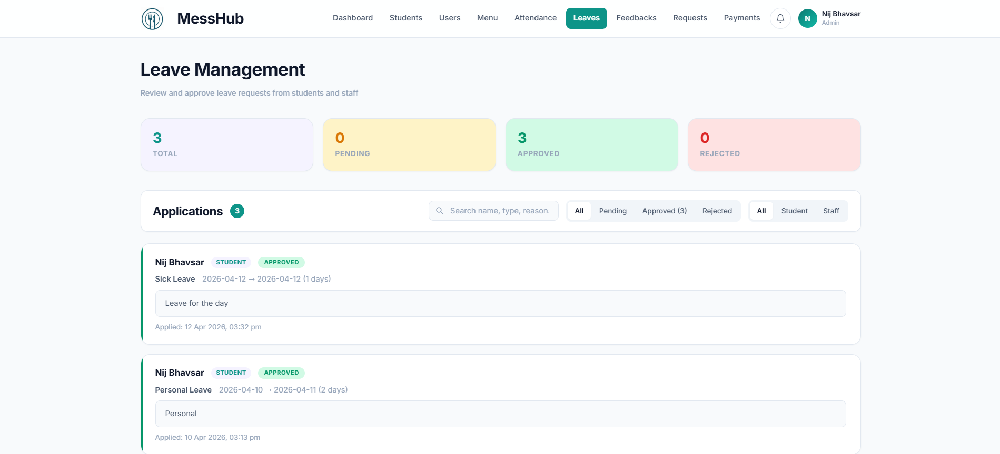
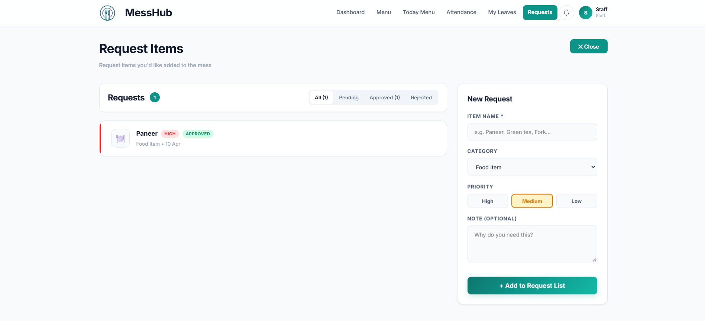
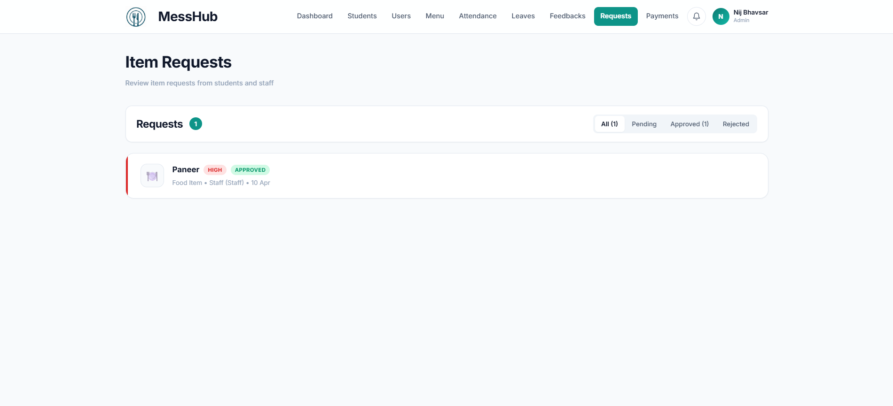
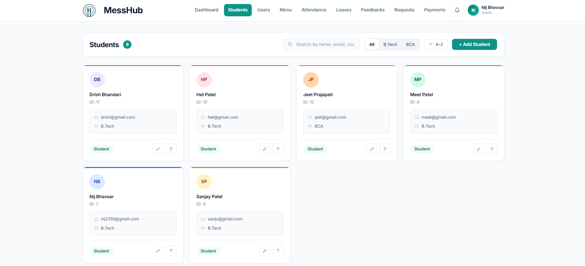
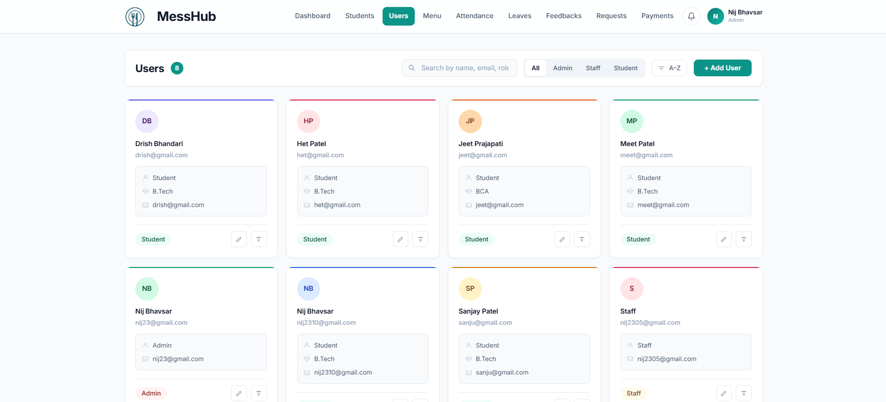